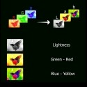
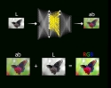

* Let's understand how image colorizer works
Image colorization harnesses the power of deep neural networks (DNNs) to imbue grayscale images with vibrant color. This process begins with the acquisition of a pre-trained model compatible with OpenCV's DNN module, often obtained from frameworks like TensorFlow or Caffe. Upon loading the model, grayscale images are preprocessed by resizing, normalization, and formatting to match the model's input requirements. Through OpenCV's DNN module, the grayscale image undergoes inference within the neural network. This step involves creating an input blob, passing it through the network using 'net.forward()', and obtaining the colorized predictions as output. The post-processing phase may involve adjusting the output format to retrieve the final colorized image. This amalgamation of loading the pre-trained model, preprocessing the grayscale image, performing inference, and post-processing the output embodies the essence of leveraging deep learning via OpenCV's DNN module for image colorization tasks.
In the domain of image processing, grayscale depictions serve as a canvas awaiting chromatic revival. Through the utilization of deep neural networks, this metamorphosis unfolds—a process known as image colorization. Neural networks, modeled after the human brain's intricate networks, decode grayscale representations, imbuing them with nuanced and vibrant color spectrums. Leveraging convolutional architectures, these networks traverse layers, deciphering contextual relationships within the image matrix. Through the amalgamation of learned features and statistical inference, grayscale pixels transform, culminating in a reimagined visual narrative. This scientific orchestration orchestrates a symphony of transformation, elucidating the latent chromatic dimensions within grayscale imagery.
Certainly! Here are the key concepts utilized in image colorization using deep learning:
1. Deep Neural Networks (DNNs): Complex neural architectures inspired by the human brain, capable of learning intricate patterns within data.
2. Pre-trained Models: Existing neural network models, often trained on vast datasets, leveraged for specific tasks without retraining from scratch.
3. Grayscale Images: Images represented in shades of gray, lacking color information, serving as input for colorization.
4. Preprocessing: Operations such as resizing, normalization, and formatting applied to prepare images for compatibility with the model's input requirements.
5. Inference: The phase where input images are fed through the neural network to generate predictions or outputs, in this case, colorized versions of grayscale images.
6. Convolutional Neural Networks (CNNs): A specific type of deep neural network well-suited for image-related tasks, employing convolutional layers to extract spatial hierarchies and features.
7. Post-processing: Operations performed on the output to refine or adjust the colorized image, ensuring the final result aligns with desired expectations.
8. OpenCV's DNN Module: A framework enabling the utilization of deep neural networks within OpenCV, facilitating efficient deployment and execution of these models for image-related tasks.
Logic Table
| Color Space Component | Descripton |
|---|---|
| L (Lightness) | Represents the brightness of the color, ranging from 0 (black) to 100 (white). |
| a | Represents the green–red color component, ranging from -128 (green) to +127 (red). |
| b | Represents the green–red color component, ranging from -128 (green) to +127 (red). |
| Image Preprocessing | Operations to prepare images for compatibility with model input requirements. Usage: LAB values are used in preprocessing grayscale images before neural network inference. |
| Post-processing | Operations performed on model output to refine colorized images. Usage: Post-processing adjusts color information in LAB space to generate the final colorized output. |
Answer: The image colorizer website transforms black and white or grayscale images into colored versions using advanced algorithms and deep learning techniques.
Answer: The website can colorize various types of images, including historical photographs, portraits, landscapes, artwork, and more, provided they are in grayscale or black and white format.
Answer: Most image colorizer websites are accessible directly via web browsers and do not require any specific software installations. Some may offer premium features through subscriptions.